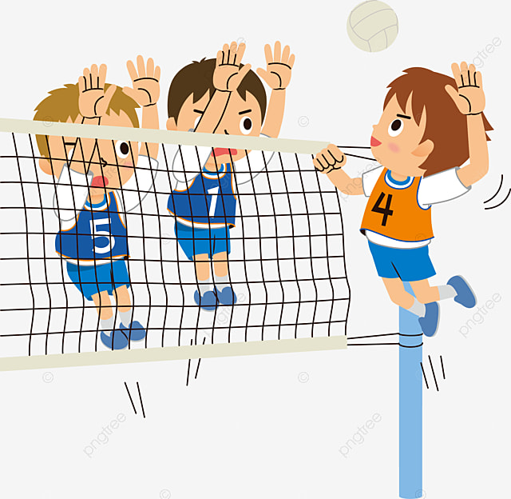

排球是一種團體球類運動，每隊 12 名隊員，其中一人登記為自由防守球員，每次 6 人下場比賽，隔著排球網分立場地兩側，其目的為用手擊球以令球落至對方場中地面得分，得分高者勝出；自 1964 年東京奧運會起，排球成為夏季奧林匹克運動會的競賽項目。接發球隊犯規或失誤，則發球隊得一分且繼續發球；發球隊犯規，對手球隊得一分且得到發球權。第一局至第四局先獲 25 分者，勝一局，若 24 ： 24 則須領先 2 分才取勝；第五局，先獲 15 分並領先 2 分為勝。每場比賽採五局三勝制， 2 ： 2 局時，第五局為決勝局。 每隊每局最多可 6 人次替補，指定替補。每局開始上場球員，僅可在該局中退場一次，再進場一次，替補球員每局僅可上場一次。
